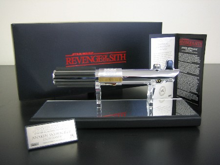

Your father wanted you to have this when you were old enough...and I think that time has come.
The next incredible donation to our eBay auction for the Starlight Starbright Children's Foundation is from our friends at Master Replicas - the world leaders in movie prop replica collectibles. Not only is this a beautiful work of art that any Jedi would want to get their hands (or hand) on, but it is also an ultra-rare Artist Proof version, which are not made for retail to the general public.
You will be bidding on an official reproduction of Anakin's lightsaber from Star Wars: Episode III - Revenge of the Sith.
(Glass display covering included, not pictured to avoid reflection)
This item was machined from aluminum and brass with copper painted and 18K gold plated accented parts, using co-molded rubber and injection plastic grips.
The weapon Anakin wields represents the lightsaber that will one day be handed down to his son, Luke. The prop was composed of a chrome-plated brass body and a polished aluminum center band, copying the look of the antique camera flash that formed the basis of the original classic trilogy props. From the Star Wars: Episode IV - A New Hope lightsaber, they copied the placement of the flash's "red button" but replaced the "glass eye" with a copper colored dome. The remaining details follow the Star Wars: Episode V - The Empire Strikes Back version and include six hand grips, a knurled center band, and a unique laser etched design in the control box top, emulating the style of a printed circuit board. A brass activation switch and a plastic clip, for attachment to the actor's belt, complete the design of this iconic Star Wars weapon.
To recreate the Anakin Skywalker Episode III Revenge of the Sith Lightsaber, Lucasfilm provided Master Replicas with an actual filming prop for reference, enabling their engineers to exactly reproduce every detail and dimension.

A Master Replicas Artist Proof is designated by a special plaque with no release number. Rather, it has "Artist Proof" where the number would normally be. Artist Proofs are generally used internally, as gifts, for marketing and other similar things. Artist Proofs are not sold to the public.
This item comes with a custom display case, ARTIST PROOF plaque, plaque stand, and certificate of authenticity.
For additional pictures click on the following links:
Click here to bid on this item now!
We'll have another great auction item coming your way shortly! Until then, check out all of the fantastic merchandise up for bids at our auction page and picture gallery!
{kind=link}
{kind=link}
{kind=link}
{kind=link}